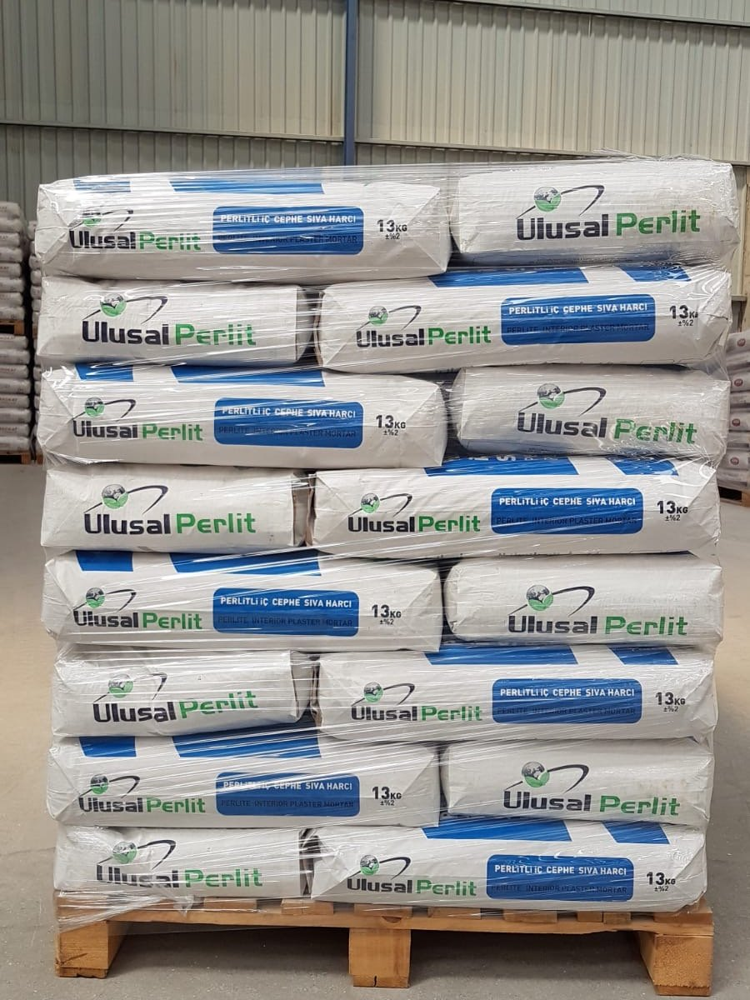
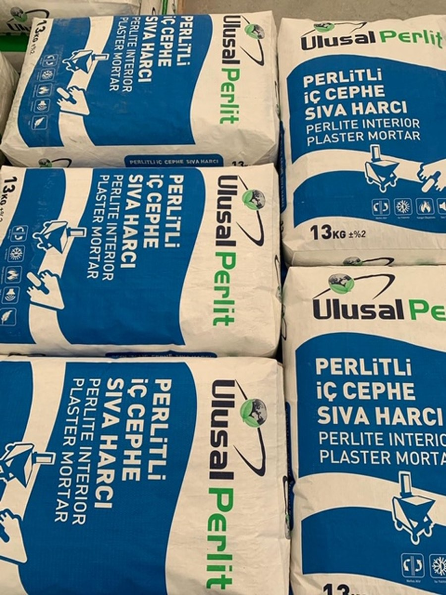
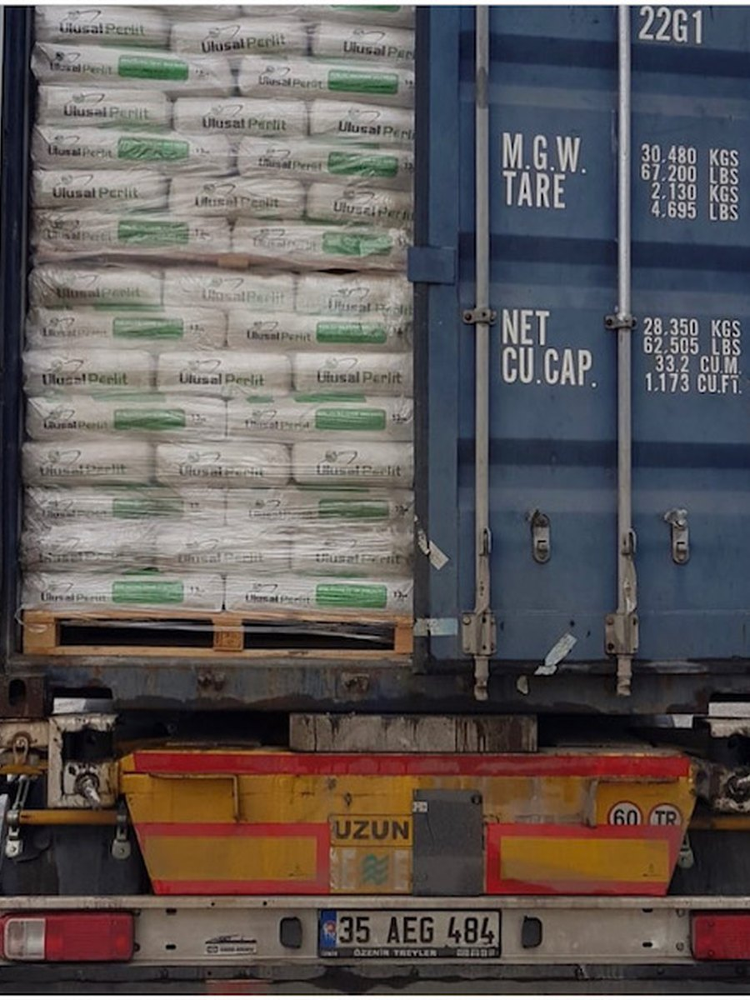

Yanmazlık
BYKHY'nin istediği A1 sınıfı yanmaz malzeme kullanımını karşılar. Yangının gelişimine neden olmaz, aksine geciktirir.
Perlit, 1000 °C'nin üzerinde genleşerek hacminin kat kat üstüne çıkar. Geride kalan milyonlarca hava hücresi; ısıyı, sesi ve ateşi durdurur.
Perlit asidik bir volkanik camdır. Isıyla genleşme özelliği vardır; genleştirildiğinde çok hafif ve gözenekli hâle geçer. Aşağıdaki kolu sürükleyerek yoğunluk değişimini görebilirsiniz.
Ham perlit kayacı, yapısındaki bağlı su sayesinde ısıtıldığında patlar gibi genleşir. Bu sırada içinde milyonlarca kapalı hava hücresi oluşur — ısı ve ses yalıtımını sağlayan da tam olarak bu gözenekli yapıdır.
Doğal bir maden olduğu için kanserojen madde içermez, kendi karbon salınımını yapmaz; ısıtma ve soğutma ihtiyacını düşürerek binanın karbon ayak izini de azaltır.
BYKHY'nin istediği A1 sınıfı yanmaz malzeme kullanımını karşılar. Yangının gelişimine neden olmaz, aksine geciktirir.
Doğal maden olması sebebiyle kanserojen madde içermez. Kendi karbon salınımını yapmaz; ısıtma-soğutma yükünü düşürür.
Düşük ısı iletkenliği ile ısı yalıtımı, gözenekli yapısıyla ses yalıtımı sağlar. Su itici özelliğiyle bünyesine su almaz.
Hafifliğiyle kolay taşıma ve istifleme. Dış cephede kara sıva, iç cephede alçı sıva gibi; el veya makine ile uygulanır.
Çimento esaslı ve perlitli, manuel veya makine ile uygulanabilen, ısı ve ses yalıtımı sağlayan sıva harcı. İç ve dış cephelerde tuğla, beton, briket ve gaz beton yüzeylerde kullanılır.

El ve makine ile uygulanabilen, ses ve ısı yalıtımı sağlayan çimento esaslı perlitli hazır sıva harcı. İç mekânlarda kaba sıva olarak uygulanır.

Isı ve ses yalıtımı sağlayan, çimento esaslı ve perlitli, manuel veya makine ile uygulanabilen hafif yalıtım şapı. Seramik, parke ve laminat kaplamaları öncesinde kullanılır.

Seracılık, sebze yetiştiriciliği, fidecilik, çiçekçilik, mantarcılık ve topraksız tarım uygulamalarında toprak düzenleyicisi olarak kullanılan, radyoaktif içermeyen hafif malzeme.

| parametre | ısı yalıtım sıvası | iç sıva | şap |
|---|---|---|---|
| kullanım | dış + iç cephe | iç cephe (kaba) | teras · döşeme |
| renk | beyaz | beyaz | gri |
| kuru birim ağırlık | 400 ± 50 kg/m³ | 500 ± 150 kg/m³ | 500 ± 70 kg/m³ |
| basınç dayanımı | CS II | CS I | C5 · TS EN 13813 |
| ısıl iletkenlik | T1 | T1 | — |
| yangına tepki | A1 | A1 | A1 |
| uygulama kalınlığı | 10–30 mm | 15–20 mm | 30–70 mm |
| sarfiyat (1 cm) | 4–4,5 kg/m² | 4,5–5 kg/m² | 5,5–6,5 kg/m² |
| kuruma süresi | 4–6 gün | 4–6 gün | 4–6 gün |
| ambalaj | 13 kg kraft | 16 kg kraft | 20 kg kraft |
| raf ömrü | 1 yıl | 1 yıl | 1 yıl |
// depolama: kapalı orijinal ambalajında, serin ve kuru ortamda. raf ömrü üretim tarihinden itibaren 1 yıl.





Üstlendiği her işi yaparken müşteri taleplerini ve yürürlükteki yasal mevzuat şartlarını karşılayan ürünler sunar.
Yaralanmaları ve sağlık bozulmalarını önlemek için her türlü önlemi alır.
Enerji ve doğal kaynakları en etkin şekilde kullanır; israfı önler.
Ulusal Perlit, inşaat sektöründe uzun yıllar tecrübesi olan, sektöre hem malzeme üretimi ve tedariği hem de uygulama alanlarında hizmetlerde bulunmuş Ulusal Yapı'nın bir markasıdır.
Yapı sektöründe satış ve uygulamayı en iyi hizmet kalitesiyle müşterilerimize sunmak; kurumsal ve ilkeli yaklaşımımızla sektörde fark yaratmak.
Çağdaş ve yenilikçi yapımızla, faaliyet gösterdiğimiz sektörlerde daima en iyisini gerçekleştirerek çalışanlarımıza, müşterilerimize ve ülkemize katma değer sağlamak.